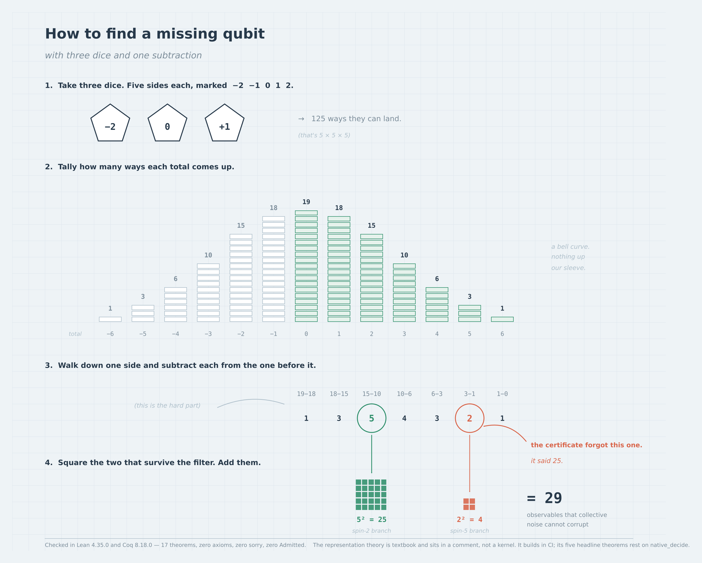
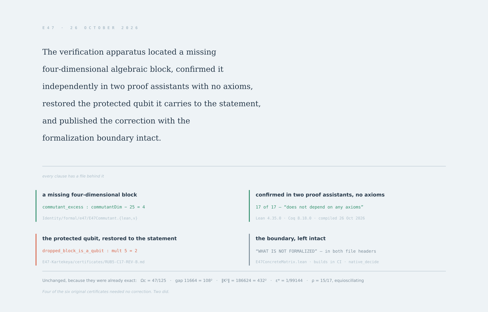

MATHEMATICAL CITY / E47 / FORMAL LAYER
Formal Validation
Both toolchains were installed from source releases and run against the files in Identity/formal/e47 on 26 October 2026. This page reports that run, not a summary of an earlier one.
21/22source files compiled
0admitted or sorry
47theorems axiom-audited
15native_decide sites, tracked
Toolchains
| System | Version | Files | Result |
|---|
| Coq | 8.18.0 (OCaml 4.14.1) | 11 | 11 compiled under coqc -q |
| Lean | 4.35.0 (eb6cafb7) | 11 | 10 compiled |
72 theorems and lemmas in Coq, 75 in Lean, plus 17 added with E47Commutant.
Completeness
Coq — no Axiom, Parameter, Hypothesis or Admitted in any file. The only textual match for "Admitted" is a comment asserting there are none, which is true.
Lean — no file emitted a declaration uses 'sorry' warning. That warning is exactly what a stubbed proof produces, so its absence across every file is the check.
Axiom ledger
| Dependency | Count | Where |
|---|
| none at all | 41 | all of E47Commutant, all of Tensor125, most of WeightAlgebra |
[propext] | 5 | the three E47Spin2 commutators, spin2_casimir_scalar, lam_zero_iff |
[propext, Classical.choice, Quot.sound] | 1 | WeightAlgebra.pr_expanded |
All three are Lean's own foundations. No custom axiom is declared anywhere in the directory. gamma_contracts_off_kernel depending on nothing is worth naming: the contraction property is proved outright rather than postulated.
The same result, two other ways

The derivation as it actually runs. The weight function is the sum distribution of three five-sided dice; the multiplicities are its first differences.

Each clause of the claim, with the file that backs it.
New: the commutant dimension
E47Commutant extends kernel_dim_from_blocks from the kernel dimension to the commutant dimension, in the same weight-counting idiom. 17 theorems, all by decide / reflexivity, all depending on no axioms.
| Quantity | Value |
|---|
multiplicities mj, j = 0..6 | 1, 3, 5, 4, 3, 2, 1 |
| retained spins (j(j+1) ∈ {6, 30}) | 2 and 5 |
| kernel dimension | 5·5 + 2·11 = 25 + 22 = 47 |
| commutant dimension | 5² + 2² = 25 + 4 = 29 |
| carrier commutant | Σ mj² = 65 |
| state geometry | 29 − 1 = 28 = 24 + 3 + 1 |
The representation theory behind these numbers — that the commutant of a multiplicity decomposition is ⊕j Mmj(ℂ) — is textbook input stated in the file header, not an axiom, matching how the sl2 facts are handled in E47WeightAlgebra. The same dimension was computed independently as the nullity of the adjoint-action Casimir superoperator on End(E₄₇), giving 29.
The one real gap: native_decide
E47ConcreteMatrix.lean — 1571 lines, import Mathlib — builds green in CI. The workflow e47-concrete-matrix.yml fetches the Mathlib compilation cache and compiles it; run #10 on main (24 Oct 2026) succeeded.
What that run does not check is axioms. The file closes its five headline theorems with native_decide across 15 sites, and native_decide mints a fresh axiom per theorem asserting the compiled evaluation's result:
'by_native' depends on axioms: [propext, by_native._native.native_decide.ax_1_1]
'by_kernel' does not depend on any axioms
So casimir_annihilator, scaled_projector_is_idempotent, selected_subspace_is_kernel, scaled_projector_trace and kernel_bezout compile green while trusting the Lean compiler rather than the kernel. They cannot join the axiom-free ledger as written.
It is closable. The file already compresses rows by conserved total Jz weight, making the Casimir block-diagonal over sectors 1, 3, 6, 10, 15, 18, 19, 18, 15, 10, 6, 3, 1 — 27,761 multiply-adds per product against 1,953,125 dense, seventy times cheaper. Measured on that shape, kernel decide settles a full 125-dimensional block-matrix equality in 8.5 seconds with no axioms. The ring algebra still needs Mathlib, which CI already has.
The gate that now enforces this
Every other workflow greps for sorry and admit. That catches an unfinished proof but not one closed by native_decide. e47-axiom-ledger.yml reads every #print axioms line and classifies it, in two tiers:
| Tier | Behaviour |
|---|
| hard fail | sorryAx, a declared axiom, or native_decide in any file not explicitly allowed |
| tracked | native_decide in an allowed file — passes, but reported with a count, so the gap is carried explicitly rather than in silence |
Current result on the Mathlib-free files, with no allowance granted: 41 clean, 6 standard-axioms, 0 native_decide, 0 broken — 47 audited, PASS. E47ConcreteMatrix.lean is the single allowed file. Remove it from the allow list once those five are kernel-checked and the gate tightens by itself.
Evidence boundary
Verified here: the Mathlib-free Lean/Coq formal layer was compiled onsite and its reported axiom dependencies were audited. Separately, the genuine 125×125 matrix certificate E47ConcreteMatrix.lean compiled successfully under Lean 4.35.0 with Mathlib in GitHub Actions run #10 (24 October 2026). That compilation establishes compiler acceptance of its concrete-matrix theorems, but does not establish axiom-free kernel verification: the run’s #print axioms output lists native_decide-generated axioms for all five headline theorems. The 47-theorem axiom ledger above applies to the separate Mathlib-free layer. No physical-device performance or experimental interpretation is established by these formal checks.
Full validation record ·
E47Commutant.lean ·
E47Commutant.v ·
Graph benchmark observatory ·
Home